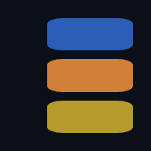

239 ελληνικά κανάλια και 26 ραδιόφωνα σε ένα πλέγμα
Η εφαρμογή τρέχει στη δική σας συσκευή: ένας μικρός διακομιστής αναμεταδίδει τα κανάλια, ώστε να παίζουν όλα — και όσα δέχονται μόνο ελληνική IP. Η εγκατάσταση γίνεται μία φορά, με μία εντολή, και δεν χρειάζεται δικαιώματα διαχειριστή.
Πατήστε «Άνοιγμα»: ελέγχει αν τρέχει σε αυτή τη συσκευή και το ανοίγει.
Αν τα Windows εμφανίσουν «Τα Windows προστάτευσαν τον υπολογιστή σας», πατήστε Περισσότερες πληροφορίες → Εκτέλεση οπωσδήποτε.
irm https://raw.githubusercontent.com/tkafkas82/greektv/main/install/install-windows.ps1 | iex
Πατήστε Win, γράψτε PowerShell, Enter, και επικολλήστε την εντολή.
Κατεβάζει το Node.js (αν λείπει) και την εφαρμογή, την ξεκινά και ανοίγει τον browser. Αν το Windows Firewall ρωτήσει για το Node.js, επιτρέψτε το για να βλέπουν και το κινητό ή η τηλεόραση.
Ελέγχει αν τρέχει, το ξεκινά αν χρειάζεται και ενημερώνεται μόνο του. Το «Greek TV - Stop» το σταματά.
⌘ + Space, γράψτε Terminal, Enter.
curl -fsSL https://raw.githubusercontent.com/tkafkas82/greektv/main/install/install.sh | bash
Κατεβάζει το Node.js (αν λείπει) και την εφαρμογή, την ξεκινά και ανοίγει τον browser. Δεν ζητά κωδικό.
curl -fsSL https://raw.githubusercontent.com/tkafkas82/greektv/main/install/install.sh | bash
greektv start / greektv stop.
Η έκδοση του Play Store είναι παλιά και δεν δουλεύει.
Termux στο F-Droidpkg install -y curl && curl -fsSL https://raw.githubusercontent.com/tkafkas82/greektv/main/install/install.sh | bash
Αν ρωτήσει κάτι με Y/n, πατήστε Enter.
greektv — ή βάλτε κουμπί στην αρχική οθόνη με το
Termux:Widget.
Το Android μπορεί να κλείσει το Termux στο παρασκήνιο· αν σταματήσει, ξανατρέξτε το greektv.
Εγκαταστήστε το σε έναν υπολογιστή στο ίδιο Wi-Fi (Windows, Mac ή Linux, δείτε τις άλλες καρτέλες).
http://192.168.1.20:3000.
%LOCALAPPDATA%\GreekTV ή ~/.greektv.